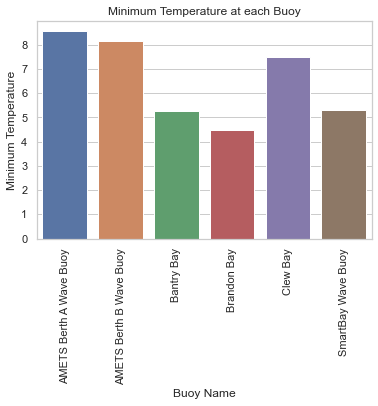
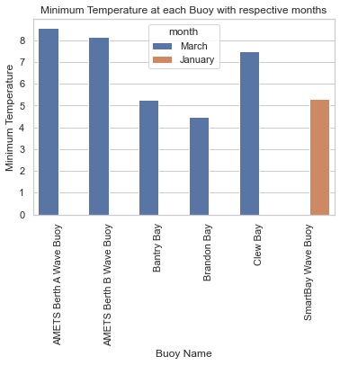
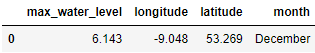
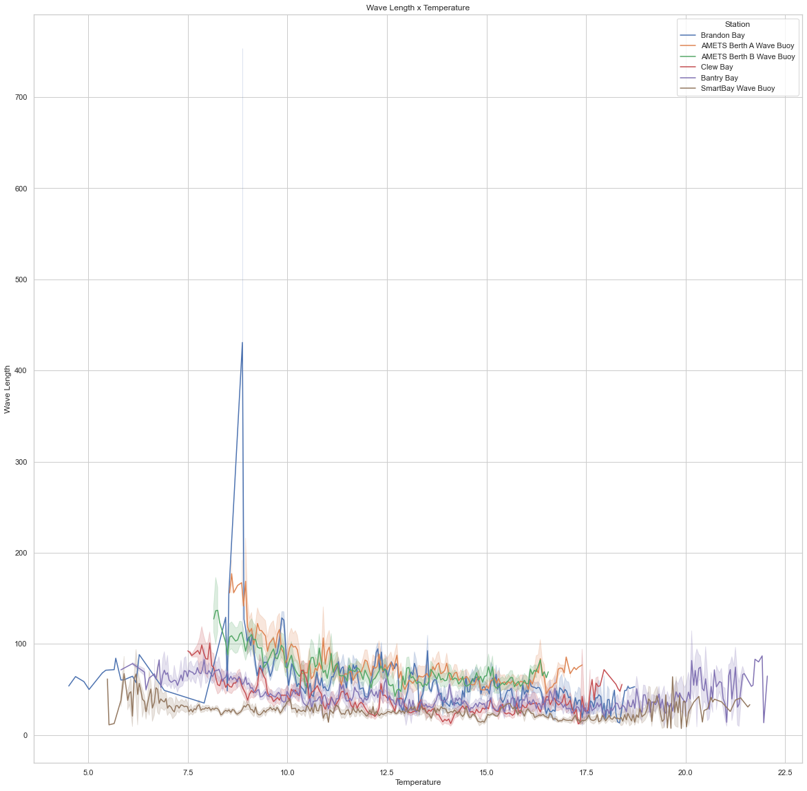

Techincal Test in Data Science
1. What is the lowest temperature of each one of the Bouys?
- AMETS Berth A Wave Buoy = 8.55°C
- AMETS Berth B Wave Buoy = 8.15°C
- Bantry Bay = 5.27°C
- Brandon Bay = 4.47°C
- Clew Bay = 7.50°C
- SmartBay Wave Buoy = 5.31°C

a. Which usually month it occurs?
- March is the month where the lowest temperatures can be found at most buoys. However, on 'SmartBay Wave Buoy', January was the month with the lowest temperature.

2. Where (lat/long) do we have the biggest water level?
- The biggest water level can be found at:
- Latitude: 53.269 degrees north
- Longitude: -9.048 degrees east
- Biggest Water Level: 6.143 meters
a. Which usually month it occurs?
- It usually occurs at December.

3. How the Wave Lenghts correlates with Sea Temperature?
- As we can see in the graph , there is a small correlation between Sea Temperature and Wave Lenght. As the temperatures goes up, Wave Length tends to go down.
